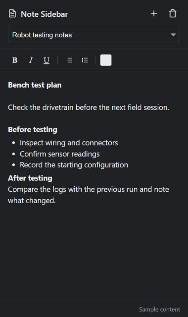
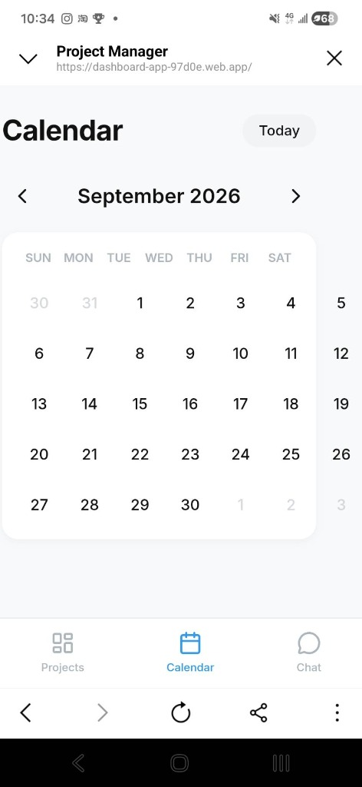
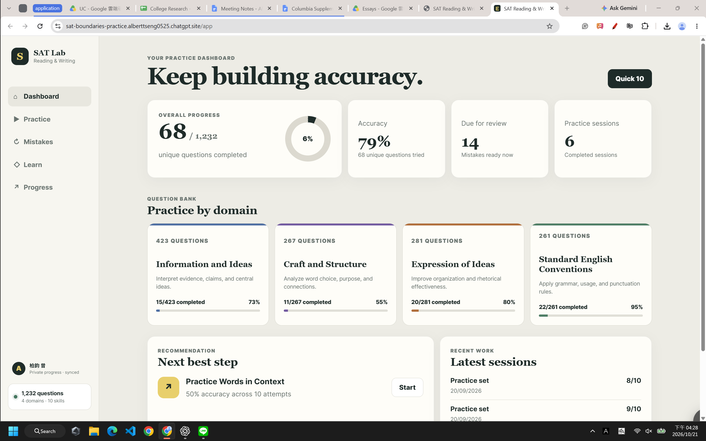
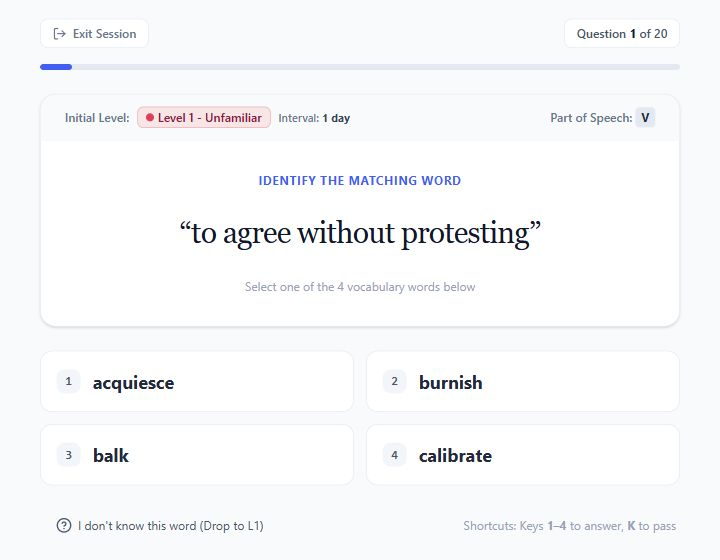

02 / Chrome extension
Side Notes
Switching between research and a separate editor interrupted my work. I built a multi-note side panel so I can keep writing beside the page I’m reading.
Locally installed prototypeExplore Side Notes ↗When a task in my own workflow becomes frustrating, I build a tool to make it easier, using AI to assist with coding. These apps help me organize projects, take notes, investigate flight tests, and study.
I needed my desktop task list
when I was away from my desk.
I built a mobile dashboard that brings my local Markdown checklists together with cloud tasks and a calendar, so I can plan the next step without maintaining a second list.
Explore OmniSync

Switching between research and a separate editor interrupted my work. I built a multi-note side panel so I can keep writing beside the page I’m reading.
Locally installed prototypeExplore Side Notes ↗
After unstable flight tests, I needed a clearer way to investigate the logs. I built scripts that collect configuration checks and sensor comparisons into readable reports.
Used on physical flight logsExplore the diagnostics tools ↗
Practice questions, explanations, and mistake review belong in the same workflow. This app brings them together so focused practice is easier to organize.
Published · May require sign-inExplore SAT Lab ↗
I wanted my memory notes to be part of testing, rather than something I had to find afterward. I built a vocabulary app that connects quizzes, personal mnemonics, and spaced review.
Actively used prototypeExplore Vocabulary Mastery ↗I’m interested in software that removes a repeated inconvenience: checking the same information twice, losing context between windows, or searching through data by hand. The goal is to make the next task easier, then improve the tool as I use it.